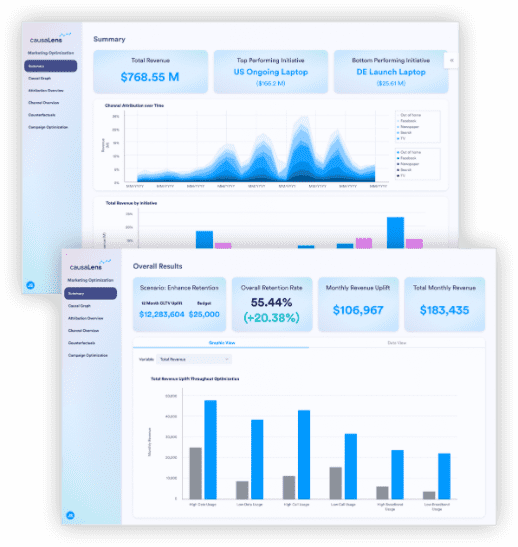

Construímos modelos causais que simulam cenários futuros e encontram a decisão ótima — o preço que maximiza margem, a alocação que reduz custo, a intervenção que gera mais resultado por real investido.

Um modelo de ML pode prever que um hospital terá superlotação, mas não diz qual intervenção reduz internações em 15%. Pode prever queda nas vendas, mas não mostra que reposicionar o preço em 6% recupera a margem sem perder volume. Nós entendemos o mecanismo, otimizamos a decisão e quantificamos o resultado esperado.
Não entregamos análises — entregamos decisões otimizadas com resultado projetado. O preço que maximiza margem. A alocação que corta custo. A intervenção com maior retorno por real investido.
Descobrimos quais variáveis realmente movem seus resultados — e quanto. Não apenas "lojas maiores vendem mais", mas "cada m² adicional gera R$ 1.200/mês até o ponto de saturação".
Rode centenas de cenários em minutos: variações de preço, realocação de equipe, mudanças de mix. Cada cenário retorna receita, custo e margem projetados — para você comparar resultados antes de investir.
O modelo não apenas simula — ele encontra o ótimo. O preço exato que maximiza margem por categoria. A escala de equipe que entrega o menor custo por atendimento. O mix de investimento com maior ROAS comprovado.
Uma réplica digital da sua operação onde cada mudança mostra o impacto no resultado. Teste abrir uma unidade, mudar o turno, trocar um fornecedor — e veja receita, custo e margem responderem em tempo real.
Não entregamos relatórios. Entregamos a decisão ótima com resultado projetado, e um simulador para o seu time continuar otimizando sem depender de nós.
Qual resultado você quer maximizar? Mapeamos o objetivo de negócio, as alavancas disponíveis, as restrições reais e a métrica de sucesso.
Construímos o modelo que conecta causas a efeitos no seu sistema — combinando o conhecimento do seu time com descoberta causal sobre os dados reais.
Confrontamos o modelo com dados históricos e cenários conhecidos. Se o modelo não reproduz o passado com fidelidade, não simulamos o futuro com ele.
Rodamos milhares de cenários e encontramos a combinação de decisões que maximiza o seu objetivo — com projeção de receita, custo e retorno para cada alternativa.
Você recebe a decisão ótima implementável e um simulador para o time de negócio continuar testando cenários e otimizando resultados de forma autônoma.
Encontrar o preço por SKU, canal e região que maximiza margem total — simulando elasticidade, canibalização e resposta competitiva antes de aplicar.
Otimizar escala de equipe, ocupação de leitos, distribuição de turnos — reduzindo custo por atendimento e tempo de espera com resultado projetado por cenário.
Alocar budget onde o retorno causal comprovado é maior — separando o efeito real de cada ação do ruído, e otimizando o mix para máximo ROAS.
Margem, custo, ocupação, retorno sobre investimento — conte-nos qual resultado você quer maximizar. Simulamos o cenário, encontramos o ótimo e projetamos o impacto financeiro antes de você tomar a decisão.